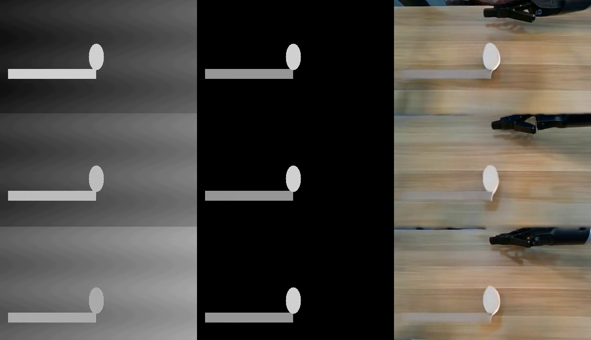

RoboRender · 2026.10.27
【一卡一世界】几何有否决权：为什么仿真视频训不出真桌子上的策略 | arXiv RoboRender论文复现笔记

仿真器里的杯子，边是对的，把手的位置是对的，机械臂接下来 81 帧会往哪走，标签也是对的。策略一放到真桌子上就失手。失手的原因常常不是摩擦算错了，而是木头的纹路、金属把手上那一点高光、背景里多出来的一盆植物，仿真渲染里都没有。人眼拿这些线索认物体，网络也拿这些线索认物体。RoboRender 把这件事从“把仿真修得更像世界”换成另一件：仿真继续负责几何、动力学和动作，视频模型负责把这条轨迹画成真实世界里会看到的 RGB。
这篇工作来自 Stanford、Nvidia 和 Microsoft Research，作者是 Huang Huang、Wensi Ai、Ziyu Chen、Youhui Wang、Zijian Du、Yang Liu、Jiaolong Yang、李飞飞和吴佳俊。论文是 arXiv:2610.09254，项目页在 robo-render.github.io。他们在真机上报告的数字很硬：八个任务、三种机体、每项 10 次，平均成功率 71%。同一批仿真轨迹，直接拿仿真 RGB 去训只有 10%，加上纹理和光照的域随机化是 20%。开口任务（开抽屉、开冰箱）上，前两种数据的成功率是 0，RoboRender 是 70% 和 90%。
视觉这条缝，三条老路都留着口子
仿真便宜，能并行，能自动复位，还能给出特权状态。视觉操作卡在另一件事上：策略部署时看到的，是真实相机的 RGB，训练时看到的如果是另一套成像，认物体这件事就得重新学。
补这条缝的老办法大致有三族。数字孪生用神经渲染或高斯溅射把真实场景建回去，每个新房间都要采集、标定、准备资产，交互中的几何还容易漂。换成深度、点云或物体姿态，视觉差距是绕开了，语义也一起绕开了，部署时还得再挂一个感知模块，问“这个把手到底是哪一个”。域随机化把纹理、光照、相机随机掉，分布变宽了，画面经常不成立，细结构——抽屉把手和柜体是同一种木头——随机纹理补不出来。
RoboRender 把仿真留在它擅长的地方。轨迹还是 MolmoSpaces 和 CuRobo 里规划出来的：抓取库、碰撞检查、逆运动学，抓放是预抓取–抓取–抬起–放置–撤回，铰链物体沿圆弧，移动操作先导航再抓。只有规划成功的片段留下来。这些轨迹自带深度、机械臂掩码、本体感觉和动作。视频模型不负责发明物理，它负责在这些条件上画外观。
画出来的 RGB 再和仿真器的状态、动作配成一对，拿去微调 π0.5。策略预测 32 步动作，执行前 16 步，训练 4 万步、批大小 72。部署是零样本：没有真机微调。真机是办公室，物体大小、相机角度和背景都和仿真不一样。DROID 风格的抓放用 Franka 加 Robotiq，移动操作是训练时没见过的 R1Pro，还有一条 YAM 机械臂夹绿色记号笔。视频模型的训练集里只有 DROID 和 AgiBot，后两种机体是靠掩码条件泛化出来的。
模型的赌注：把多视角钉在同一块潜变量上
底子是 Wan2.1-T2V-1.3B 的控制变体，发布出来的权重是 PAI 的 Wan2.1-Fun-V1.1-1.3B-Control。它已经是一个带控制通道的视频扩散 Transformer，RoboRender 在上面用 LoRA 做机器人适配：全局批大小 16，大约 1.2 万步，数据约 13 万条真实操作片段，分辨率 416×240。
条件有四路，各管一件事。
深度视频管几何和物体怎么动。每个视角用 Video-Depth-Anything 估深度，有立体相机时再混进 FoundationStereo，都做逆深度归一化。训练时每个视角随机换深度来源，免得模型记住某一种估计器的毛病。
机械臂 RGB 掩码管机体和手臂怎么动。SAM3 把臂和夹爪从画面里分出来。背景可以换，手臂的运动还在。掩码来自仿真渲染时，因为手臂外观本身的仿真差距不大，所以直接用仿真器画的手臂当条件。R1Pro 和 YAM 没进过训练集，模型仍然能顺着掩码把它们画出来。
语言管外观：材质、光照、背景、桌面上有什么。训练语料里的句子是 Qwen2-VL 从各视角第一帧写的，先起草，再用非腕部视角交叉核对，输出收成结构化描述，比单看一张图少胡说。生成仿真数据时，场景描述换成 Claude 写的任务句子。
上一帧管时间。Wan 的窗口是固定的 81 帧，示教往往更长。训练时以一定概率丢掉上一帧，于是第一段可以没有锚，后面的段可以接上一段的最后一帧。推理就这么自回归地滚下去。论文在 15 秒的滚出上每 3 秒量一次 PSNR 和 LPIPS，这条模型在每个时间点都领先只看深度的基线。
结构上，深度和掩码各自过 Wan 的视频 VAE，在通道上拼起来，再沿高度把各个视角堆成一块。三视角、每视角 240 像素，总高度 720，能被 16 整除，这是 VAE 和 patch 一起提出的要求。噪声潜变量、深度潜变量、掩码潜变量在通道上拼好，送进 DiT。发布代码里 DiT 的配置是：隐层 1536，30 层，12 头，前馈 8960，patch 是 1×2×2，输入通道 48，也就是 16 维的视频潜变量加上两路各 16 维的控制潜变量。文本走 umT5-XXL，上一帧的画面另走一个 CLIP 视觉塔，再加一层卷积把参考潜变量接到 token 序列前面。
采样是流匹配，shift 5.0，默认 50 步，CFG 5.0。正负提示各跑一遍，按 5 倍差值合成。三个视角因此共享同一次去噪，桌子、杯子、手臂在外相机和腕部相机里是同一块潜变量的不同高度带，而不是三次独立生成后再指望它们碰巧一致。
这就是多视角一致性的来处。Wan-Fun-Control 和 Cosmos-Transfer2.5 按视角分开画，桌子会变。RoboRender 在 500 条留出的真实片段上，第一段的 FID 25.7、FVD 93.9，自回归续写的 PSNR 22.28、SSIM 0.784、LPIPS 0.142。对照里最好的深度条件模型，FID 也在 42 以上。50 个人做二选一，在真实感和多视角一致性上，RoboRender 对这三个基线的偏好都过了七成，对 RoboTransfer 的生成质量偏好是 94.6%。
还有一个训练时故意挖的洞。深度图上随机盖掉大块补丁，模型必须在没有几何的地方按提示词把外观补上，而不是把输入深度复述一遍。推理时把同一块区域在所有视角上挖空，提示词里写上新的杂物，杂物就会出现在每个视角的对应位置，而且不改任务依赖的几何。DROID 抓放的配方是：外视角 2 到 5 块、盖住 20% 到 50%，腕部 1 到 2 块。真机测试里桌上随机放了干扰物之后，仿真和域随机化掉得厉害，RoboRender 几乎不动，因为训练数据里已经有这些它自己画上去的杂物。
速度是这个设计的账单。一块三视角 81 帧，论文在单张 H200 上是 68.8 秒。TeaCache 按调制输入的变化决定这一步要不要重算，同一片段降到 35.3 秒，系数是在 Wan2.1-T2V-1.3B 上标定的，拿来当控制版的代理。DMD2 把 50 步双向采样蒸馏成 6 步，H200 上 4.29 秒。蒸馏权重没有跟这个推理仓库一起发布，仓库的 issue 里还留着“会不会开源”的问题。眼下能跑的，是 50 步的教师模型。
数据侧，训练集约 12.7 万条：AgiBot-World-Alpha 约 7.0 万，DROID 约 5.7 万，16 类任务。这些数据集本来是给策略用的，没有提示词，没有对齐的深度，也没有手臂掩码。预处理把每条片段切成对齐的 81 帧，再补上那四样条件。仿真数据是另一套，不和训练视频模型的真实数据混用：抓放和移动操作在 OmniGibson，开抽屉开冰箱和 YAM 在 MuJoCo。每个任务一千到两千条成功轨迹。同一条轨迹多画几遍、只换提示词，开口任务的成功率还能再涨 65 个百分点。几何没变，变的是外观的多样性。深度图本身也可以拿去训策略，部署时再用 Video-Depth-Anything 从 RGB 估回来。论文里这条基线在 YAM、DROID 抓放和 R1Pro 上是 30%、25% 和 10%，RoboRender 的 RGB 是 70%、68% 和 70%。深度躲开了纹理差距，也把“这句话指的是桌上哪一个物体”一起拿掉了。RGB 里的语义仍然在起作用。开口任务尤其吃这一点：把手和柜体往往是同一种材质，只看轮廓对不上。
一张 W7900 上实际发生的事
发布的推理入口是 infer.py：读每个视角的深度视频和机械臂掩码，读一句提示，按 81 帧切段，调用上面这条 pipeline，写出各视角的 mp4 和一张深度、掩码、生成结果并排的对比视频。README 里的例子叫 data/test_long_sample_00502。仓库里没有这个目录，.gitignore 把 data/ 排除了，公开的文件列表里也找不到它。验证就按它规定的目录结构造了一段 81 帧的合成条件：三个视角，一根移动的横条加一个椭圆，外加一句“木桌上的机械臂去拿红杯子”。这只证明主路径能跑完，不能拿来和论文的 FID 或 71% 比。
移植本身没有 CUDA 源码要改写。flash_attn 和 sageattention 是可选导入，requirements 里也没列。缺它们时，原代码掉进 scaled_dot_product_attention。三视角 81 帧进 DiT 之后大约 2.5 万个 token（时间 21、高 45、宽 26）。SDPA 的数学核会把分数矩阵摊开，48 GB 不够。ROCm 上的 PyTorch 2.11 能走 AOTriton 的 flash attention，其次是省显存的核。core/dit.py 把后端限定成这两个，数学核不再作为退路。CLIP 那条支路本来就用兼容模式的 SDPA，同一函数盖住了。
safetensors 直接按 cuda 设备加载，在 ROCm 上有时会去调 cudaMalloc。加载器加了退路：失败就先放 CPU 再搬到 HIP。这次 3.1 GB 的 DiT 和 667 MB 的 LoRA 直接载上了设备，退路没有触发，但留着。umT5-XXL 的编码器是 11.3 GB 的 bf16 权重，CLIP 视觉塔的文件是 4.7 GB，VAE 0.5 GB。去噪进行中，rocm-smi 读到这张卡占用 18.4 GiB。上游说三视角大约 20 GB，对得上，所以没有加第二张卡。
容器只用一个渲染节点。镜像是 rocm/pytorch:rocm7.14，PyTorch 2.11.0+rocm7.14.0，HIP 7.14。进程里 torch.cuda.device_count() 是 1，设备名是 AMD Radeon Pro W7900D。从镜像的 /opt/venv 再套一层 venv 时，--system-site-packages 指不到父环境里的 torch，得把那个 site-packages 写进 .pth，否则依赖装完了，import torch 仍然失败。MIOpen 抱怨系统里的 gfx1100 数据库文件不可读，第一块 VAE tile 花了 8.9 秒，后面的块是 1.2 秒，警告没有挡住计算。
50 步、CFG 5.0、seed 42，这一段从编码到解码用了 399.7 秒。论文在 H200 上的同规格片段是 68.8 秒，大约 5.8 倍。LoRA 融合了 300 个张量。输出是三条 416×240、81 帧、15 fps 的视频，对比视频是 1248×720：每一行一个视角，列是深度、掩码、生成结果。
第 40 帧值得看一眼。条件是灰条和白椭圆，提示词要一只红杯子。画面上是木纹桌、黑色平行夹爪，椭圆变成了一把浅色勺子。几何把轮廓钉死了，语言没能把勺子说成杯子。这正是这套条件的分工：深度和掩码有否决权，语言只在几何没规定的地方选外观。真要一只红杯子，得先在仿真里摆出杯子的形状。合成样本因此也说明了验证的边界——管道是通的，论文里的策略成功率不在这次运行的范围内。